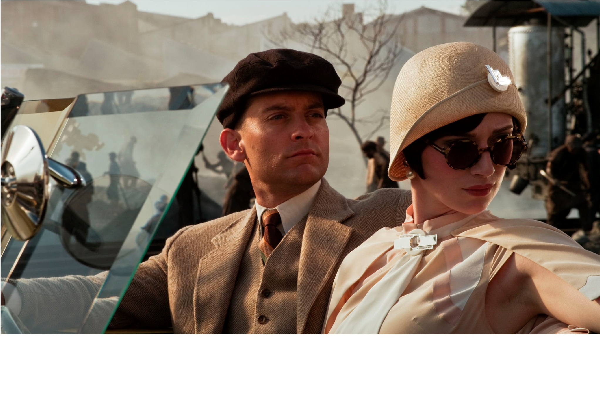

Fashion uit de jaren twintig en de jaren zeventig
Een zoektocht door de jaren heen
The Seventies en The “roaring” Twenties. Twee periodes die ver uit elkaar liggen,
of toch niet? Als je deze twee met elkaar vergelijkt, zijn de verschillen
makkelijk te
vinden.
De overeenkomsten daarentegen zijn net iets lastiger te vinden. Hiervoor moeten
we toch echt wat dieper in deze twee periodes duiken en verder gaan zoeken.
Tekst: team Fs